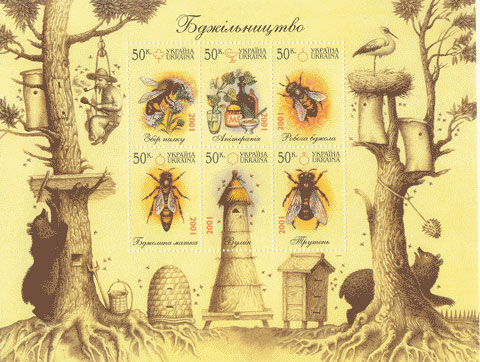

Thursday, September the 29th, 2005
back to: title, date or indexes
The nights are drawing in and soon we shall all be looking for pastimes to entertain us through the long winter evenings. As ever, Hooting Yard is delighted to bring you some marvellously exciting but little-known parlour games, and we begin with the traditional Ukrainian bee-counting game.

Print out copies of the above picture sufficient for every member of the family. Everyone is given one copy of the bee stamps picture, a sheet of paper, and a pencil. In alphabetical order by name, each player takes it in turn to count the number of bees, large and small. While they are counting, everyone else must stay still and not say a word. The counting player finishes by writing their name and the number of bees they have counted on their sheet of paper, folds it in half twice, and places it in the pot, which can be an upturned hat, or a cauldron, or some similar container. Then the next player counts the bees, and so on, until there are as many pieces of folded paper in the pot as there are players. One family member is then nominated to take the papers from the pot, put them in an envelope, affix a postage stamp, and address the envelope to the local Official Bee Counting Person. Remember to write your return address on the back of the envelope. A second player is then nominated to go out into the dark night, wild with gales, and pop the envelope into the nearest post box. While they are gone, the remaining players place the bee pictures in a neat pile and tidy away the pencils. Some weeks later, the Official Bee Counting Person will send the result, giving a definitive tally of the number of bees, large and small, in the picture, and announcing which player got closest to the correct total. The winner is allowed to choose another bee picture for the next round.
Hooting Yard on the Air, October the 5th, 2005 : “Wisps and Clumps” (starts around 25:16)
Hooting Yard on the Air, December the 7th, 2005 : “Wisps and Clumps” (starts around 25:16)